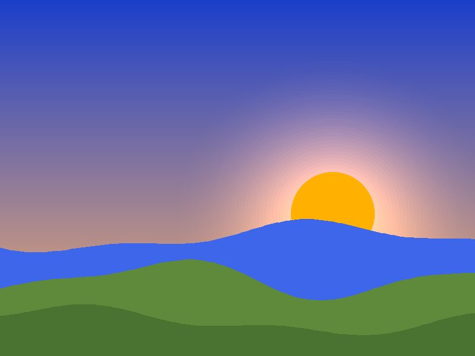
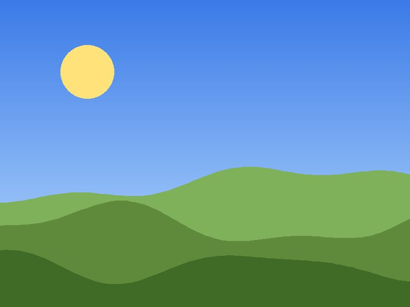
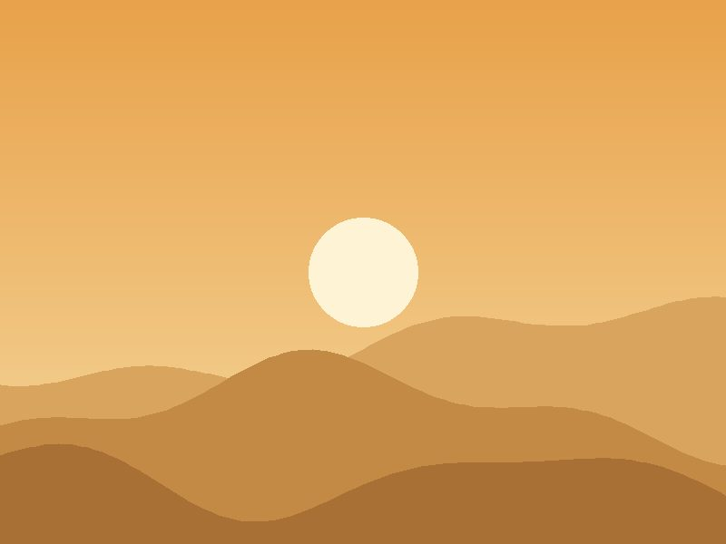
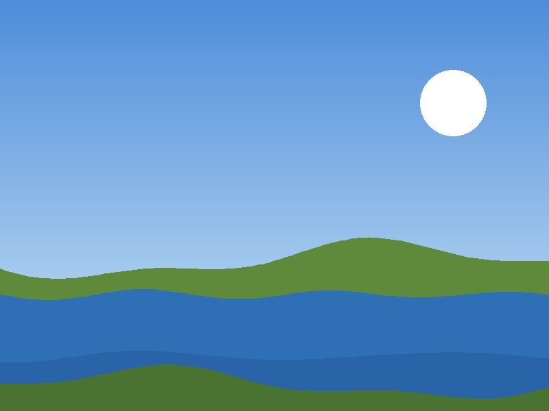

Тал нутгийн зургийн цомог
Зургийг эргүүлж, цаана нь бичсэн тэмдэглэлийг уншаарай. Гар утаснаас том дэлгэц хүртэл, хөдөлгөөнийг багасгасан тохиргоотой ч ажиллана.
Цомгийг үзэхЗургийн цомог
Карт бүр дээрх товчийг дарж эргүүлнэ. Товч дээр Tab-аар очоод Enter эсвэл Space дарахад мөн ажиллана.
-

Үүр цайх Үүр цайх
Дорнод тэнгэр улбар шараар гэрэлтэж, нар уулсын ард гарч ирж буй мөч.
-

Үд дунд Үд дунд
Цэлмэг тэнгэр, хязгааргүй ногоон тал. Сүүдэр богиносч, өнгө хамгийн тод харагддаг цаг.
-
Одтой шөнө Одтой шөнө
Хотын гэрлээс хол, тэнгэрийн од тоолж болохоор тод харагддаг шөнө.
-

Говийн элс Говийн элс
Салхинд хэлбэр нь өөрчлөгддөг шар манхнууд, наранд алтлаг гэрэлтдэг.
-

Нуур ба тал Нуур ба тал
Тэнгэрийн өнгийг толь шиг тусгадаг нуур, эргийн дагуух ногоон бэлчээр.
-
Өвлийн өглөө Өвлийн өглөө
Цасан бүрхүүлтэй уулс, хүйтэн мананцар. Дуу чимээ бараг сонсогдохгүй өглөө.
Нар мандах бичлэг
Байршил
Зургуудыг авсан тал нутгийн ойролцоох Улаанбаатар хотын газрын зураг.